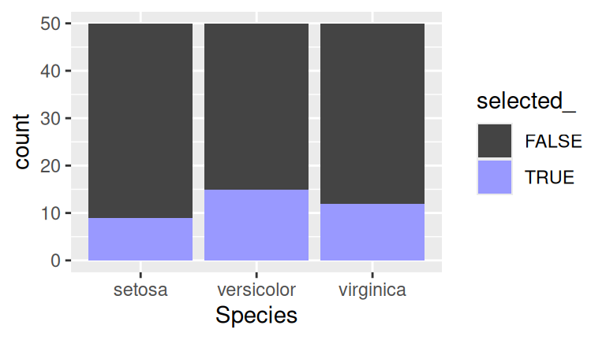
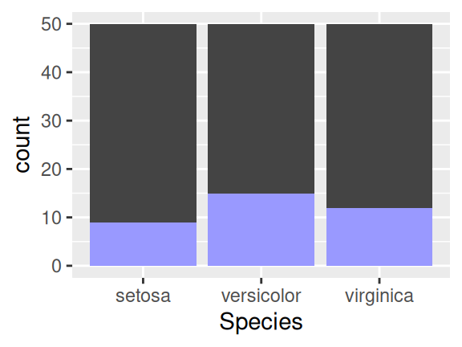

Crosstalk doesn’t require the use of Shiny. You can perform linked brushing and filtering purely with JavaScript, leaving you with static HTML files that you can host on any web server.
On the other hand, you can use Crosstalk and Shiny together, and when you do so, you broaden the capabilities of Crosstalk by allowing your brushing and filtering to drive arbitrary calculations and Shiny outputs (and vice versa).
We’ll start by creating a basic Shiny application that contains some
linked widgets, simply so you can see how the parts fit together. If
you’ve ever used HTML widgets with Shiny apps, this will look familiar.
Our UI definition includes xxxOutput calls, which we then
populate with server-side renderXXX expressions.
The main thing to note here is that the shared_iris
variable that holds the SharedData instance is being
declared inside the server function.
library(shiny)
library(crosstalk)
library(d3scatter)
ui <- fluidPage(
fluidRow(
column(6, d3scatterOutput("scatter1")),
column(6, d3scatterOutput("scatter2"))
)
)
server <- function(input, output, session) {
shared_iris <- SharedData$new(iris)
output$scatter1 <- renderD3scatter({
d3scatter(shared_iris, ~Petal.Length, ~Petal.Width, ~Species, width = "100%")
})
output$scatter2 <- renderD3scatter({
d3scatter(shared_iris, ~Sepal.Length, ~Sepal.Width, ~Species, width = "100%")
})
}
shinyApp(ui, server)It’s important that the SharedData object be
created inside the server function, not outside it. If you
create SharedData outside of the server function, the
bidirectional communication between Crosstalk’s client and server pieces
will not work and some of the capabilities described below will fail to
work.
Run the above code, or click the Live Demo button just below it. This app works, but doesn’t do anything we couldn’t accomplish just as well without Shiny. Let’s see what else we can do.
One thing you can’t do in a static Crosstalk HTML page is change your data (without regenerating and then reloading the page). With Shiny, it’s easy to set up reactive expressions that react to changes.
Integrating reactive expressions with Crosstalk is easy. Take a
reactive expression that produces a data frame, and simply pass the
reactive expression into SharedData$new in place of a data
frame.
In this example, we’ll modify the previous example on this page to randomly jitter the data a couple of times a second. (If random jittering is too contrived for your taste, imagine streaming data or interactively filtered data.)
library(shiny)
library(crosstalk)
library(d3scatter)
ui <- fluidPage(
fluidRow(
column(6, d3scatterOutput("scatter1")),
column(6, d3scatterOutput("scatter2"))
)
)
server <- function(input, output, session) {
jittered_iris <- reactive({
invalidateLater(500)
data.frame(lapply(iris, function(col) {
if (is.numeric(col))
jitter(col)
else
col
}))
})
shared_iris <- SharedData$new(jittered_iris)
output$scatter1 <- renderD3scatter({
d3scatter(shared_iris, ~Petal.Length, ~Petal.Width, ~Species, width = "100%",
x_lim = range(iris$Petal.Length), y_lim = range(iris$Petal.Width))
})
output$scatter2 <- renderD3scatter({
d3scatter(shared_iris, ~Sepal.Length, ~Sepal.Width, ~Species, width = "100%",
x_lim = range(iris$Sepal.Length), y_lim = range(iris$Sepal.Width))
})
}
shinyApp(ui, server)Notice that we passed the reactive expression itself
(jittered_iris), not the value of the reactive expression
(jittered_iris()). We don’t want to read the
reactive expression at the time that we construct the
SharedData object, but instead, want to give the reactive
expression itself to the new object so the latter can read the former at
any point in the future. If this feels foreign to you, think of how you
pass a function name, not a function call, to lapply;
that’s exactly analogous to what we’re doing here.
Note that when using a reactive expression for your underlying data
source, the SharedData constructor’s key
argument should be provided explicitly unless you know for sure that
either 1) the data frame will always have row names, or 2) the keys of
the rows you’re returning will never vary in order. If the former row 3
becomes the new row 15 while the app executes, and you have not
specified keys, you’ll get strange results. And be sure not to provide
the key argument as a character value, but instead as a
formula or function (that will be applied against each new data frame
produced by the reactive expression).
Not only can we use reactive data to feed SharedData and
Crosstalk widgets (i.e. server-to-client); we can also use Crosstalk
selections and filters to feed reactive expressions
(i.e. client-to-server). We do this using the same
SharedData object that we pass to the widgets. This object
has a data() method that we can use to reactively read a
snapshot of the data, and optionally, the selection state of all the
rows.
In this example we’ll use the Crosstalk selection to drive a textual summary of the selected data.
(As a bonus, we’ll also let the user subset the underlying data frame
by species, using a Shiny selectInput and a reactive. At
the time of this writing, Crosstalk filter controls don’t work
particularly well with Shiny, so you can use traditional Shiny
techniques to do filtering instead.)
library(shiny)
library(crosstalk)
library(d3scatter)
library(dplyr)
ui <- fluidPage(
selectInput("species", "Species", levels(iris$Species), multiple = TRUE),
fluidRow(
column(6, d3scatterOutput("scatter1")),
column(6, d3scatterOutput("scatter2"))
),
h4("Summary of selected data"),
verbatimTextOutput("summary")
)
server <- function(input, output, session) {
# Subset the dataset based on user's choice of species
user_iris <- reactive({
iris[is.null(input$species) | iris$Species %in% input$species,]
})
shared_iris <- SharedData$new(user_iris)
output$scatter1 <- renderD3scatter({
d3scatter(shared_iris, ~Petal.Length, ~Petal.Width, ~Species, width = "100%")
})
output$scatter2 <- renderD3scatter({
d3scatter(shared_iris, ~Sepal.Length, ~Sepal.Width, ~Species, width = "100%")
})
output$summary <- renderPrint({
df <- shared_iris$data(withSelection = TRUE) %>%
filter(selected_ | is.na(selected_)) %>%
mutate(selected_ = NULL)
cat(nrow(df), "observation(s) selected\n\n")
summary(df)
})
}
shinyApp(ui, server)Calling shared_iris$data() with the
withSelection = TRUE argument gives us a data frame with an
additional column selected_ that contains TRUE
or FALSE (or NA for all the rows if there is
no active selection). This is a reactive operation, so when the
selection changes in the future, the output (or reactive expression, or
observer) that called data(withSelection=TRUE) will
automatically respond.
We can use the capabilities above to integrate Crosstalk widgets with interactive ggplot2 plots driven by Shiny.
For those very familiar with ggplot2 and Shiny, reflecting selection state using fill or color is straightforward but getting nice looking results is a bit tedious. For example, this code is simple but the output has some problems:
library(ggplot2)
# Simulated sharedData$data(withSelection = TRUE)
df <- cbind(iris, selected_ = c(TRUE, FALSE, FALSE)[sample(3, nrow(iris), replace = TRUE)])
ggplot(df, aes(Species, fill = selected_)) +
geom_bar(stat = "count") +
scale_fill_manual(values = c("#444444", "#9999FF"))
This code has several problems:
selection_
column to a factor with ordered levels.selection_ column is NA and must be converted
to FALSE.Rather than forcing you to deal with these common problems each time,
Crosstalk provides some helper functions:
selection_factor(selected_) should be used in
aes, and then scale_fill_selection or
scale_color_selection should be used for scaling.
library(crosstalk)
ggplot(df, aes(Species, fill = selection_factor(selected_))) +
geom_bar(stat = "count") +
scale_fill_selection("#444444", "#9999FF")## Warning: The `<scale>` argument of `guides()` cannot be `FALSE`. Use "none" instead as
## of ggplot2 3.3.4.
## ℹ The deprecated feature was likely used in the crosstalk package.
## Please report the issue at <https://github.com/rstudio/crosstalk/issues>.
## This warning is displayed once every 8 hours.
## Call `lifecycle::last_lifecycle_warnings()` to see where this warning was
## generated.
Much better!
The following code is a complete Shiny app that uses this approach.
This example uses Shiny’s new debounce function, which
filters a reactive expression to slow down its rate of change. Without
it, too many updates come from Crosstalk and cause the ggplot2 code to
appear laggy. (The debounce function has not, at time of
this writing, been part of a CRAN release. You can install the latest
development version of Shiny with
devtools::install_github("rstudio/shiny").)
library(shiny)
library(crosstalk)
library(d3scatter)
library(ggplot2)
ui <- fluidPage(
fluidRow(
column(4, d3scatterOutput("scatter1")),
column(4, d3scatterOutput("scatter2")),
column(4, plotOutput("by_species"))
)
)
server <- function(input, output, session) {
shared_iris <- SharedData$new(iris)
output$scatter1 <- renderD3scatter({
d3scatter(shared_iris, ~Petal.Length, ~Petal.Width, ~Species, width = "100%")
})
output$scatter2 <- renderD3scatter({
d3scatter(shared_iris, ~Sepal.Length, ~Sepal.Width, ~Species, width = "100%")
})
df <- debounce(reactive(shared_iris$data(withSelection = TRUE)), 250)
output$by_species <- renderPlot({
ggplot(df(), aes(Species, fill = crosstalk::selection_factor(selected_))) +
geom_bar(stat = "count") +
crosstalk::scale_fill_selection("#444444", "#9999FF")
})
}
shinyApp(ui, server)